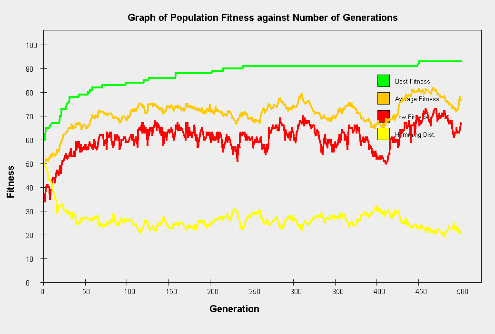
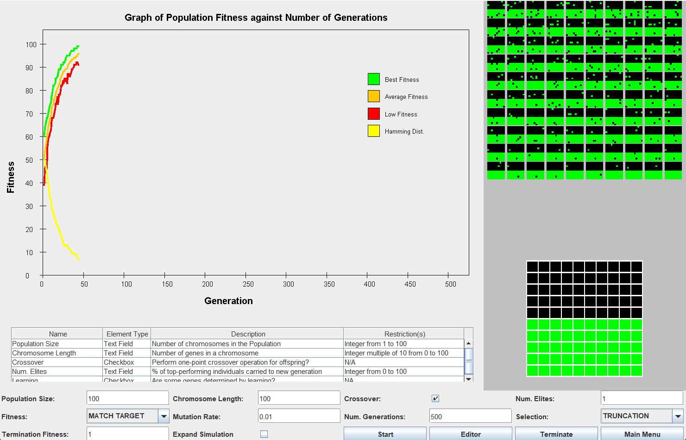
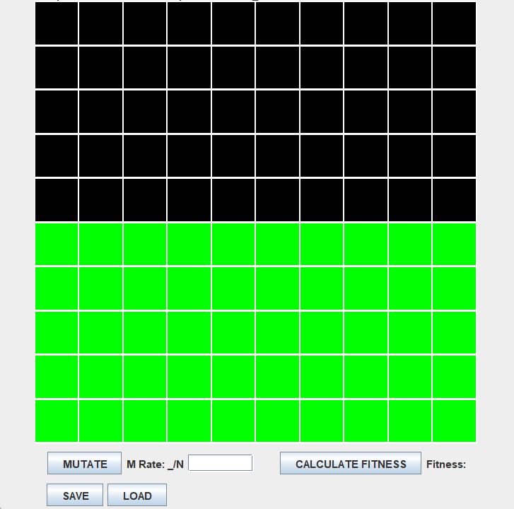

Projects
Project 1
Project Name: Genetic Algorithm Research Proejct
Technology the project was developed in: Java
Project Description:
Collaborated in a team of 3 to develop a genetic algorithm simulator and visualizer from scratch using Java, implementing object-oriented design principles and creating UML diagrams with the two peers
Conducted more than 50 experiments to test its performance, analyzed the effect of different parameters on guiding evolution of genes, replicated results of an existing study, and delivered a comprehensive report
  